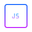

要说分布式系统是什么东西，那么就得先从单块系统开始说起。很多同学应该都知道，如果你在一些中小型的传统软件公司里工作，那么很有可能现在在做的系统是如下这个样子。所有的代码都在一个工程里，最多可能就是通过maven等构件工具拆分了一下代码工程模块，不同的模块可以放在不同的工程代码里。在部署的时候，可能就是直接在线上的几台机器里直接放到里面的tomcat下来运行。然后在web服务器前面可能会有一层负载均衡服务器，比如用nginx或者是其他的负载均衡设备。很多流量很小的企业内部系统，比如OA、CRM、财务等系统，甚至可能就直接在一台机器的tomcat下部署一下。然后直接配置一下域名解析，就可以让这个系统的可能几十个，或者几百个用户通过访问域名来使用这个软件了
作品展示
热门文章

学习目标：1原型2原型链3原型指向改变后是如何添加方法和属性4原型指向改变后的原型链5实例对象的属性和原型对象的属性重名6通过原型继承7组合继承8拷贝继承；如果我们要创建100个Person对象,这样要开一百个内存空间，每次都要调用drink()函数，由于drink()函数都是一样的，每个内存空间里都有它太过于浪费空间，那我们怎样才能避免这种情况，减少内存呢？我们接下来引入原型prototype;构造函数Person中的prototype原型和实例对象per中的__proto__原型指向是相同的，我们一般是先有构造函数再有实例对象，实例对象由构造函数创建，所以说实例对象中的__proto__原型指向的是构造函数中的原型prototype
这段时间在和同事们面谈，目的了解下同事们的情况，解答些疑问，听一些他们对团队公司的建议等等，这种面对面、一对一的面谈，会收到很好的效果。如果你也是一名管理者，那么你如何组织这次面谈，以达到更好的效果呢，比如你的下属有问题不愿意说怎么办？如何引导他们更愿意的和你谈，和你聊？ 1. 一对一这段时间在和同事们面谈，目的了解下同事们的情况，解答些疑问，听一些他们对团队公司的建议等等，这种面对面、一对一的面谈，会收到很好的效果。如果你也是一名管理者，那么你如何组织这次面谈，以达到更好的效果呢，比如你的下属有问题不愿意说怎么办？如何引导他们更愿意的和你谈，和你聊？
1. 一对一
其他推荐